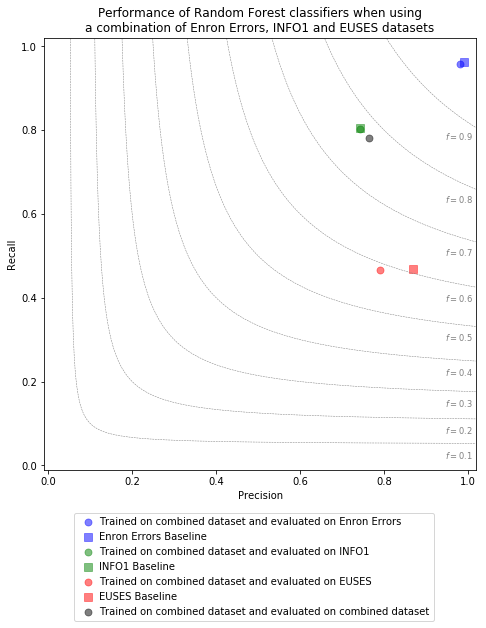

Description
In addition to the studies presented in the paper we also investigated the effect of using a combination of datsets for training and evaluation of fault prediction classifiers. Specifically, we trained Random Forest models on a dataset that was created by combining our available datasets (Enron Errors, Info1, Euses) into one, and evaluated the resulting predictors both using individual datasets, and using the combined dataset. The same grid-search and cross-validation approach as described for the main studies was employed for this evaluation.
Plot Type
To compare model prediction performances, we employ a custom plot type, the Precision / Recall / F1 plot, that combines precision, recall, and F1-performance for a specific evaluated model. The evaluation result of each trained model is illustrated by a symbol in the plot area. For any given symbol in the plot, its horizontal position corresponds to the precision score of the evaluated model. Likewise, its vertical precision corresponds to the recall score of the evaluated model. Lastly, the symbol's position in relation to radial lines indicate the model's achieved F1 score.
Plot

Plot data in CSV format